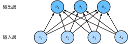

softmax回归
:label:sec_softmax
在 :numref:sec_linear_regression中我们介绍了线性回归。
随后，在 :numref:sec_linear_scratch中我们从头实现线性回归。
然后，在 :numref:sec_linear_concise中我们使用深度学习框架的高级API简洁实现线性回归。
回归可以用于预测多少的问题。 比如预测房屋被售出价格，或者棒球队可能获得的胜场数，又或者患者住院的天数。
事实上，我们也对分类问题感兴趣：不是问“多少”，而是问“哪一个”：
- 某个电子邮件是否属于垃圾邮件文件夹？
- 某个用户可能注册或不注册订阅服务？
- 某个图像描绘的是驴、狗、猫、还是鸡？
- 某人接下来最有可能看哪部电影？
通常，机器学习实践者用分类这个词来描述两个有微妙差别的问题：
- 我们只对样本的“硬性”类别感兴趣，即属于哪个类别；
- 我们希望得到“软性”类别，即得到属于每个类别的概率。 这两者的界限往往很模糊。其中的一个原因是：即使我们只关心硬类别，我们仍然使用软类别的模型。
分类问题
:label:subsec_classification-problem
我们从一个图像分类问题开始。 假设每次输入是一个$2\times2$的灰度图像。 我们可以用一个标量表示每个像素值，每个图像对应四个特征$x_1, x_2, x_3, x_4$。 此外，假设每个图像属于类别“猫”“鸡”和“狗”中的一个。
接下来，我们要选择如何表示标签。 我们有两个明显的选择：最直接的想法是选择$y \in {1, 2, 3}$， 其中整数分别代表${\text{狗}, \text{猫}, \text{鸡}}$。 这是在计算机上存储此类信息的有效方法。 如果类别间有一些自然顺序， 比如说我们试图预测${\text{婴儿}, \text{儿童}, \text{青少年}, \text{青年人}, \text{中年人}, \text{老年人}}$， 那么将这个问题转变为回归问题，并且保留这种格式是有意义的。
但是一般的分类问题并不与类别之间的自然顺序有关。 幸运的是，统计学家很早以前就发明了一种表示分类数据的简单方法：独热编码（one-hot encoding）。 独热编码是一个向量，它的分量和类别一样多。 类别对应的分量设置为1，其他所有分量设置为0。 在我们的例子中，标签$y$将是一个三维向量， 其中$(1, 0, 0)$对应于“猫”、$(0, 1, 0)$对应于“鸡”、$(0, 0, 1)$对应于“狗”：
$$y \in {(1, 0, 0), (0, 1, 0), (0, 0, 1)}.$$
网络架构
为了估计所有可能类别的条件概率，我们需要一个有多个输出的模型，每个类别对应一个输出。 为了解决线性模型的分类问题，我们需要和输出一样多的仿射函数（affine function）。 每个输出对应于它自己的仿射函数。 在我们的例子中，由于我们有4个特征和3个可能的输出类别， 我们将需要12个标量来表示权重（带下标的$w$）， 3个标量来表示偏置（带下标的$b$）。 下面我们为每个输入计算三个未规范化的预测（logit）：$o_1$、$o_2$和$o_3$。
$$ \begin{aligned} o1 &= x_1 w{11} + x2 w{12} + x3 w{13} + x4 w{14} + b1,\ o_2 &= x_1 w{21} + x2 w{22} + x3 w{23} + x4 w{24} + b2,\ o_3 &= x_1 w{31} + x2 w{32} + x3 w{33} + x4 w{34} + b_3. \end{aligned}
$$
我们可以用神经网络图 :numref:fig_softmaxreg来描述这个计算过程。
与线性回归一样，softmax回归也是一个单层神经网络。
由于计算每个输出$o_1$、$o_2$和$o_3$取决于
所有输入$x_1$、$x_2$、$x_3$和$x_4$，
所以softmax回归的输出层也是全连接层。

:label:fig_softmaxreg
为了更简洁地表达模型，我们仍然使用线性代数符号。 通过向量形式表达为$\mathbf{o} = \mathbf{W} \mathbf{x} + \mathbf{b}$， 这是一种更适合数学和编写代码的形式。 由此，我们已经将所有权重放到一个$3 \times 4$矩阵中。 对于给定数据样本的特征$\mathbf{x}$， 我们的输出是由权重与输入特征进行矩阵-向量乘法再加上偏置$\mathbf{b}$得到的。
全连接层的参数开销
:label:subsec_parameterization-cost-fc-layers
正如我们将在后续章节中看到的，在深度学习中，全连接层无处不在。
然而，顾名思义，全连接层是“完全”连接的，可能有很多可学习的参数。
具体来说，对于任何具有$d$个输入和$q$个输出的全连接层，
参数开销为$\mathcal{O}(dq)$，这个数字在实践中可能高得令人望而却步。
幸运的是，将$d$个输入转换为$q$个输出的成本可以减少到$\mathcal{O}(\frac{dq}{n})$，
其中超参数$n$可以由我们灵活指定，以在实际应用中平衡参数节约和模型有效性
:cite:Zhang.Tay.Zhang.ea.2021。
softmax运算
:label:subsec_softmax_operation
现在我们将优化参数以最大化观测数据的概率。 为了得到预测结果，我们将设置一个阈值，如选择具有最大概率的标签。
我们希望模型的输出$\hat{y}_j$可以视为属于类$j$的概率， 然后选择具有最大输出值的类别$\operatorname*{argmax}_j y_j$作为我们的预测。 例如，如果$\hat{y}_1$、$\hat{y}_2$和$\hat{y}_3$分别为0.1、0.8和0.1， 那么我们预测的类别是2，在我们的例子中代表“鸡”。
然而我们能否将未规范化的预测$o$直接视作我们感兴趣的输出呢？
答案是否定的。
因为将线性层的输出直接视为概率时存在一些问题：
一方面，我们没有限制这些输出数字的总和为1。
另一方面，根据输入的不同，它们可以为负值。
这些违反了 :numref:sec_prob中所说的概率基本公理。
要将输出视为概率，我们必须保证在任何数据上的输出都是非负的且总和为1。 此外，我们需要一个训练的目标函数，来激励模型精准地估计概率。 例如， 在分类器输出0.5的所有样本中，我们希望这些样本是刚好有一半实际上属于预测的类别。 这个属性叫做校准（calibration）。
社会科学家邓肯·卢斯于1959年在选择模型（choice model）的理论基础上 发明的softmax函数正是这样做的： softmax函数能够将未规范化的预测变换为非负数并且总和为1，同时让模型保持 可导的性质。 为了完成这一目标，我们首先对每个未规范化的预测求幂，这样可以确保输出非负。 为了确保最终输出的概率值总和为1，我们再让每个求幂后的结果除以它们的总和。如下式：
$$\hat{\mathbf{y} } = \mathrm{softmax}(\mathbf{o})\quad \text{其中}\quad \hat{y}_j = \frac{\exp(o_j)}{\sum_k \exp(o_k)}$$
:eqlabel:eq_softmax_y_and_o
这里，对于所有的$j$总有$0 \leq \hat{y}_j \leq 1$。 因此，$\hat{\mathbf{y} }$可以视为一个正确的概率分布。 softmax运算不会改变未规范化的预测$\mathbf{o}$之间的大小次序，只会确定分配给每个类别的概率。 因此，在预测过程中，我们仍然可以用下式来选择最有可能的类别。
$$ \operatorname{argmax}_j \hat y_j = \operatorname{argmax}_j o_j.
$$
尽管softmax是一个非线性函数，但softmax回归的输出仍然由输入特征的仿射变换决定。 因此，softmax回归是一个线性模型（linear model）。
小批量样本的矢量化
:label:subsec_softmax_vectorization
为了提高计算效率并且充分利用GPU，我们通常会对小批量样本的数据执行矢量计算。 假设我们读取了一个批量的样本$\mathbf{X}$， 其中特征维度（输入数量）为$d$，批量大小为$n$。 此外，假设我们在输出中有$q$个类别。 那么小批量样本的特征为$\mathbf{X} \in \mathbb{R}^{n \times d}$， 权重为$\mathbf{W} \in \mathbb{R}^{d \times q}$， 偏置为$\mathbf{b} \in \mathbb{R}^{1\times q}$。 softmax回归的矢量计算表达式为：
$$ \begin{aligned} \mathbf{O} &= \mathbf{X} \mathbf{W} + \mathbf{b}, \ \hat{\mathbf{Y} } & = \mathrm{softmax}(\mathbf{O}). \end{aligned} $$
:eqlabel:eq_minibatch_softmax_reg
相对于一次处理一个样本，
小批量样本的矢量化加快了$\mathbf{X}和\mathbf{W}$的矩阵-向量乘法。
由于$\mathbf{X}$中的每一行代表一个数据样本，
那么softmax运算可以按行（rowwise）执行：
对于$\mathbf{O}$的每一行，我们先对所有项进行幂运算，然后通过求和对它们进行标准化。
在 :eqref:eq_minibatch_softmax_reg中，
$\mathbf{X} \mathbf{W} + \mathbf{b}$的求和会使用广播机制，
小批量的未规范化预测$\mathbf{O}$和输出概率$\hat{\mathbf{Y} }$
都是形状为$n \times q$的矩阵。
损失函数
接下来，我们需要一个损失函数来度量预测的效果。
我们将使用最大似然估计，这与在线性回归
（ :numref:subsec_normal_distribution_and_squared_loss）
中的方法相同。
对数似然
softmax函数给出了一个向量$\hat{\mathbf{y} }$， 我们可以将其视为“对给定任意输入$\mathbf{x}$的每个类的条件概率”。 例如，$\hat{y}_1$=$P(y=\text{猫} \mid \mathbf{x})$。 假设整个数据集${\mathbf{X}, \mathbf{Y}}$具有$n$个样本， 其中索引$i$的样本由特征向量$\mathbf{x}^{(i)}$和独热标签向量$\mathbf{y}^{(i)}$组成。 我们可以将估计值与实际值进行比较：
$$ P(\mathbf{Y} \mid \mathbf{X}) = \prod_{i=1}^n P(\mathbf{y}^{(i)} \mid \mathbf{x}^{(i)}).
$$
根据最大似然估计，我们最大化$P(\mathbf{Y} \mid \mathbf{X})$，相当于最小化负对数似然：
$$ -\log P(\mathbf{Y} \mid \mathbf{X}) = \sum{i=1}^n -\log P(\mathbf{y}^{(i)} \mid \mathbf{x}^{(i)}) = \sum{i=1}^n l(\mathbf{y}^{(i)}, \hat{\mathbf{y} }^{(i)}),
$$
其中，对于任何标签$\mathbf{y}$和模型预测$\hat{\mathbf{y} }$，损失函数为：
$$ l(\mathbf{y}, \hat{\mathbf{y} }) = - \sum_{j=1}^q y_j \log \hat{y}_j. $$
:eqlabel:eq_l_cross_entropy
在本节稍后的内容会讲到， :eqref:eq_l_cross_entropy中的损失函数
通常被称为交叉熵损失（cross-entropy loss）。
由于$\mathbf{y}$是一个长度为$q$的独热编码向量，
所以除了一个项以外的所有项$j$都消失了。
由于所有$\hat{y}_j$都是预测的概率，所以它们的对数永远不会大于$0$。
因此，如果正确地预测实际标签，即如果实际标签$P(\mathbf{y} \mid \mathbf{x})=1$，
则损失函数不能进一步最小化。
注意，这往往是不可能的。
例如，数据集中可能存在标签噪声（比如某些样本可能被误标），
或输入特征没有足够的信息来完美地对每一个样本分类。
softmax及其导数
:label:subsec_softmax_and_derivatives
由于softmax和相关的损失函数很常见，
因此我们需要更好地理解它的计算方式。
将 :eqref:eq_softmax_y_and_o代入损失 :eqref:eq_l_cross_entropy中。
利用softmax的定义，我们得到：
$$ \begin{aligned} l(\mathbf{y}, \hat{\mathbf{y} }) &= - \sum{j=1}^q y_j \log \frac{\exp(o_j)}{\sum{k=1}^q \exp(ok)} \ &= \sum{j=1}^q yj \log \sum{k=1}^q \exp(ok) - \sum{j=1}^q yj o_j\ &= \log \sum{k=1}^q \exp(ok) - \sum{j=1}^q y_j o_j. \end{aligned}
$$
考虑相对于任何未规范化的预测$o_j$的导数，我们得到：
$$ \partial{o_j} l(\mathbf{y}, \hat{\mathbf{y} }) = \frac{\exp(o_j)}{\sum{k=1}^q \exp(o_k)} - y_j = \mathrm{softmax}(\mathbf{o})_j - y_j.
$$
换句话说，导数是我们softmax模型分配的概率与实际发生的情况（由独热标签向量表示）之间的差异。 从这个意义上讲，这与我们在回归中看到的非常相似， 其中梯度是观测值$y$和估计值$\hat{y}$之间的差异。 这不是巧合，在任何指数族分布模型中 （参见本书附录中关于数学分布的一节）， 对数似然的梯度正是由此得出的。 这使梯度计算在实践中变得容易很多。
交叉熵损失
现在让我们考虑整个结果分布的情况，即观察到的不仅仅是一个结果。
对于标签$\mathbf{y}$，我们可以使用与以前相同的表示形式。
唯一的区别是，我们现在用一个概率向量表示，如$(0.1, 0.2, 0.7)$，
而不是仅包含二元项的向量$(0, 0, 1)$。
我们使用 :eqref:eq_l_cross_entropy来定义损失$l$，
它是所有标签分布的预期损失值。
此损失称为交叉熵损失（cross-entropy loss），它是分类问题最常用的损失之一。
本节我们将通过介绍信息论基础来理解交叉熵损失。
如果想了解更多信息论的细节，请进一步参考
本书附录中关于信息论的一节。
信息论基础
:label:subsec_info_theory_basics
信息论（information theory）涉及编码、解码、发送以及尽可能简洁地处理信息或数据。
熵
信息论的核心思想是量化数据中的信息内容。 在信息论中，该数值被称为分布$P$的熵（entropy）。可以通过以下方程得到：
$$H[P] = \sum_j - P(j) \log P(j).$$
:eqlabel:eq_softmax_reg_entropy
信息论的基本定理之一指出，为了对从分布$p$中随机抽取的数据进行编码， 我们至少需要$H[P]$“纳特（nat）”对其进行编码。 “纳特”相当于比特（bit），但是对数底为$e$而不是2。因此，一个纳特是$\frac{1}{\log(2)} \approx 1.44$比特。
信息量
压缩与预测有什么关系呢？ 想象一下，我们有一个要压缩的数据流。 如果我们很容易预测下一个数据，那么这个数据就很容易压缩。 为什么呢？ 举一个极端的例子，假如数据流中的每个数据完全相同，这会是一个非常无聊的数据流。 由于它们总是相同的，我们总是知道下一个数据是什么。 所以，为了传递数据流的内容，我们不必传输任何信息。也就是说，“下一个数据是xx”这个事件毫无信息量。
但是，如果我们不能完全预测每一个事件，那么我们有时可能会感到"惊异"。
克劳德·香农决定用信息量$\log \frac{1}{P(j)} = -\log P(j)$来量化这种惊异程度。
在观察一个事件$j$时，并赋予它（主观）概率$P(j)$。
当我们赋予一个事件较低的概率时，我们的惊异会更大，该事件的信息量也就更大。
在 :eqref:eq_softmax_reg_entropy中定义的熵，
是当分配的概率真正匹配数据生成过程时的信息量的期望。
重新审视交叉熵
如果把熵$H(P)$想象为“知道真实概率的人所经历的惊异程度”，那么什么是交叉熵？ 交叉熵从$P$到$Q$，记为$H(P, Q)$。 我们可以把交叉熵想象为“主观概率为$Q$的观察者在看到根据概率$P$生成的数据时的预期惊异”。 当$P=Q$时，交叉熵达到最低。 在这种情况下，从$P$到$Q$的交叉熵是$H(P, P)= H(P)$。
简而言之，我们可以从两方面来考虑交叉熵分类目标： （i）最大化观测数据的似然；（ii）最小化传达标签所需的惊异。
模型预测和评估
在训练softmax回归模型后，给出任何样本特征，我们可以预测每个输出类别的概率。 通常我们使用预测概率最高的类别作为输出类别。 如果预测与实际类别（标签）一致，则预测是正确的。 在接下来的实验中，我们将使用精度（accuracy）来评估模型的性能。 精度等于正确预测数与预测总数之间的比率。
小结
- softmax运算获取一个向量并将其映射为概率。
- softmax回归适用于分类问题，它使用了softmax运算中输出类别的概率分布。
- 交叉熵是一个衡量两个概率分布之间差异的很好的度量，它测量给定模型编码数据所需的比特数。
练习
- 我们可以更深入地探讨指数族与softmax之间的联系。
- 计算softmax交叉熵损失$l(\mathbf{y},\hat{\mathbf{y} })$的二阶导数。
- 计算$\mathrm{softmax}(\mathbf{o})$给出的分布方差，并与上面计算的二阶导数匹配。
- 假设我们有三个类发生的概率相等，即概率向量是$(\frac{1}{3}, \frac{1}{3}, \frac{1}{3})$。
- 如果我们尝试为它设计二进制代码，有什么问题？
- 请设计一个更好的代码。提示：如果我们尝试编码两个独立的观察结果会发生什么？如果我们联合编码$n$个观测值怎么办？
- softmax是对上面介绍的映射的误称（虽然深度学习领域中很多人都使用这个名字）。真正的softmax被定义为$\mathrm{RealSoftMax}(a, b) = \log (\exp(a) + \exp(b))$。
- 证明$\mathrm{RealSoftMax}(a, b) > \mathrm{max}(a, b)$。
- 证明$\lambda^{-1} \mathrm{RealSoftMax}(\lambda a, \lambda b) > \mathrm{max}(a, b)$成立，前提是$\lambda > 0$。
- 证明对于$\lambda \to \infty$，有$\lambda^{-1} \mathrm{RealSoftMax}(\lambda a, \lambda b) \to \mathrm{max}(a, b)$。
- soft-min会是什么样子？
- 将其扩展到两个以上的数字。